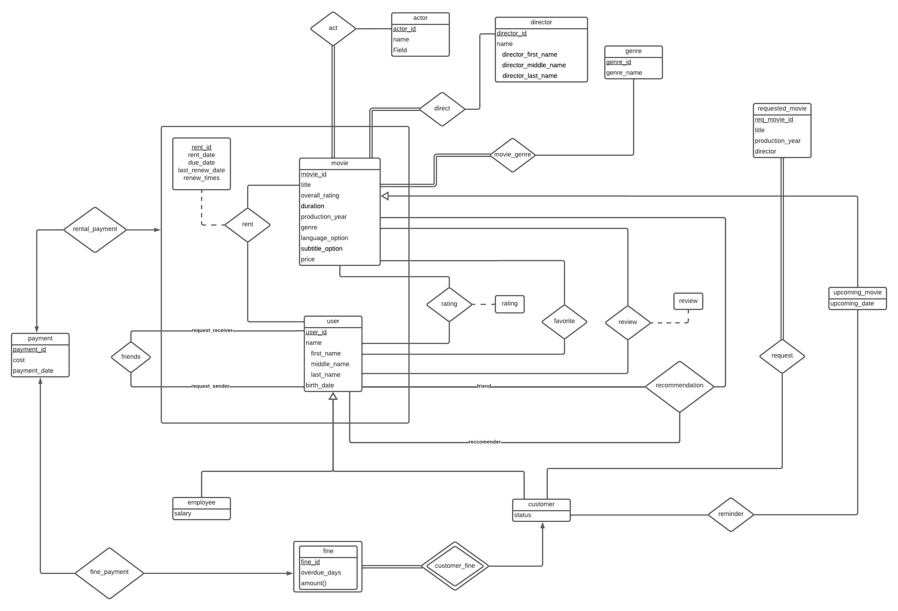

1. Introduction
The aim of this project is to create a web-based database application that will serve as a movie rental system. This system will be an online platform that will offer its users various numbers of movies to rent, watch, review and more. It will consist of two types of main users: customers and employees. Users will be able to rent the movies that are already registered to the system. They will be given the opportunity to search for a specific movie by entering its title, director, genre, etc. The feature of rating and reviewing movies will help other users during the process of choosing movies whereas the feature of recommending movies to added friends will guarantee an enjoyable time while using this system. Customers will have the chance to demand for the movies that the system lacks and employees will be able to add the requested movies to the system. Employees will also be able to delete the accounts of desired customers from the system. Overall, the purpose of this movie rental system is to facilitate renting and watching movies online by using the optimal database design. In this report, this movie rental system is evaluated in terms of its functional requirements, non-functional requirements and limitations along with the explanation for the reasons behind using a database and the ER Diagram of the system.
2. Why/How A Database Is Going To Be Used As A Part Of The System
A database-management system (DBMS) is a collection of interrelated data and a set of programs to access that data [1]. As described above, our application consists of a system that lets users access a large collection of movies. In order to keep track of these data about movies and user information, and provide a smooth rental experience to users, we need an appropriate database management system. This system we are planning to design will store all the information about movies available to rent, requested movies, ratings and reviews, rental records, registered users’ account information and many more. Tables and the relationships established between these tables in our database schema will pave the way for a simpler design, therefore a more efficient application. The system will be used as a tool to allow the users to access and manipulate this data under the limitations described below in this report.
3. Requirements
3.1 Functional Requirements
3.1.1 User
- Users can search the movies by title, director, genre, production year, rating, actor, the number of reviews, the number of recommendations.
- Users can withdraw a movie that they have already rented.
- Users can write reviews and rate a movie.
- Users can add friends and recommend movies to them.
- Users can see previously rented movies, currently rented movies, movie ratings, reviews, and the movies that their friends suggest.
- Users can see their friends’ previously rented movies, currently rented movies, movie ratings, reviews, and the movies that their friends’ friends suggest.
- Users can add a movie to their favorite lists.
- Users can remove a movie from their favorite lists.
3.1.2 Employee
- Employees can add a new movie to the system.
- Employees can delete an existing movie to the system.
- Employees can delete an existing customer account.
- Employees can rent a movie from the system for free.
- Employees can renew the rental period for free.
3.1.2 Customer
- Customers can request an absent movie.
- Customers can rent a movie from the system by paying a fee.
- Customers can renew the rental period for free at the first time, and they can renew with a fee the next time.
- Customers can add an upcoming movie to the reminder.
3.2 Non-functional Requirements
3.2.1 Scalability
- When the daily traffic of this website, which has 30000 visitors per day, exceeds this number, the bandwidth limit of this website that is allocated to the hosting plan should not be exceeded.
3.2.2 Usability
- All pages should be reached from the navigation bar with one click.
- The name of each component in the user interface should be self-explanatory and meaningful.
- It is necessary to be coherent in the layout and follow the Template Method design pattern.
- Except for pop-ups, none of the screens must be connected to each other so that users do not have to go backward on the application.
3.2.3 Security
- Payment information of the users should be secured by encryption.
- Username of the users should be unique.
3.2.4 Robustness
- The database should be designed in a way that it is able to respond to the requests from the application without any extra effort.
- When there is an error-prone input, the database system should react to it without facing any problems.
3.2.5 Recovery
- Database should be backed up regularly. Therefore, in any case of system failure, data should be saved.
3.3 Limitations
- Users can only rate and comment on the movies that they rented.
- Customers can request at most 5 movies daily.
- Customers can rent a movie for at most 7 days.
- Customers must pay a fine for an overdue movie before renting a new movie.
3.4 Pseudo Requirements
- Java Spring must be used at the back-end side.
- Vue.js must be used at the front-end side.
- MySQL must be used for the database.
4. E-R Diagram of the Movie Rental System
The diagram shown below is the conceptual database entity-relationship diagram of our online movie rental system. It represents the binary and ternary relationships between weak or strong entity sets with generalizations, aggregations, and cardinality constraints in the database schema.
